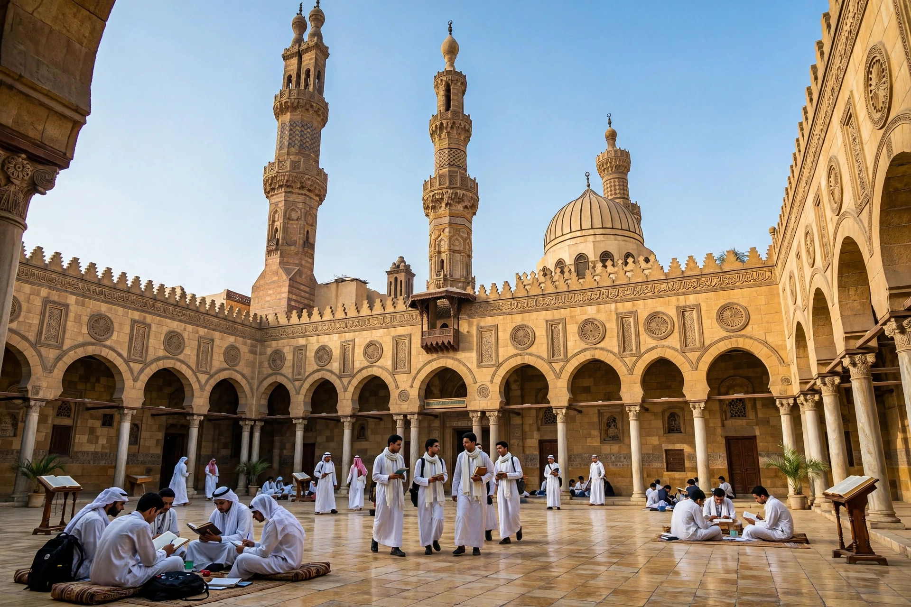

Al-Azhar University is an Egyptian university in Cairo associated with the al-Azhar Mosque. Founded by the Fatimid Caliphate in 972 CE as a centre of Islamic learning, it is one of the oldest continuously operating universities in the world, and is widely regarded as the foremost institution of Sunni Islamic scholarship. Its students study the Qur'an, Islamic law (sharia), Arabic, theology and, since reforms of 1961, secular subjects including medicine and engineering.
| Al-Azhar University | |
|---|---|
 Al-Azhar Mosque, Cairo | |
| Founded | 970–972 CE |
| Type | Public Islamic university |
| Location | Cairo, Egypt |
| Head | Grand Imam of al-Azhar |
The Fatimid general Jawhar al-Siqilli founded the mosque in 970, shortly after conquering Egypt and founding Cairo; teaching began soon after, and the institution is named for Fatimah al-Zahra, daughter of the Prophet Muhammad, from whom the Fatimids claimed descent. Initially a centre of Ismaili Shi'a learning, al-Azhar became a bastion of Sunni orthodoxy after Saladin abolished the Fatimid caliphate in 1171. Under the Mamluks and Ottomans it flourished as a university-mosque drawing students from across the Muslim world, organised in riwaqs (residential colleges) by region of origin.
Napoleon's invasion of 1798 and the reforms of Muhammad Ali shook the institution; in the nineteenth and twentieth centuries reformers such as Muhammad Abduh pressed for curricular modernisation. A 1961 law under Gamal Abdel Nasser reorganised al-Azhar as a modern university, adding secular faculties, but also increased state control — the Grand Imam is appointed by Egypt's president. Al-Azhar oversees a vast network of primary and secondary institutes (ma'ahid) across Egypt, admits women to separate faculties, and enrols tens of thousands of international students. Its pronouncements on Islamic law carry wide authority in the Sunni world, and it has positioned itself as a voice of moderation (wasatiyya).
Fatimid Caliphate · Cairo · Madrasa · Saladin